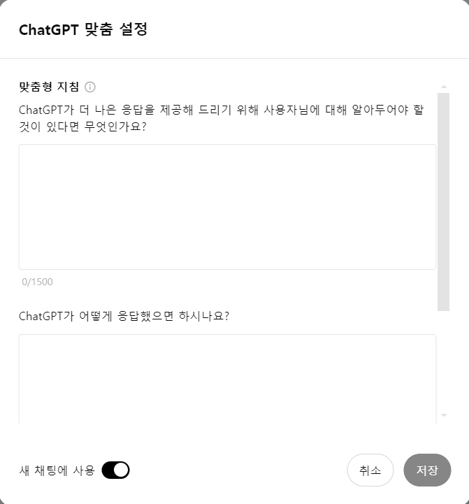

ChatGPT Custom Settings
ChatGPT의 맞춤형 설정을 통해 대화의 흐름, 음성, 톤 등을 조정할 수 있습니다.

MyGPTs Settings
MyGPTs는 나만의 GPT를 구성할 수 있는 기능입니다. 나만의 GPT를 생성하고, 고유한 설정을 적용할 수 있습니다.
아래 버튼을 클릭하여 팝업 창을 확인하세요.
ChatGPT의 맞춤형 설정을 통해 대화의 흐름, 음성, 톤 등을 조정할 수 있습니다.
MyGPTs는 나만의 GPT를 구성할 수 있는 기능입니다. 나만의 GPT를 생성하고, 고유한 설정을 적용할 수 있습니다.